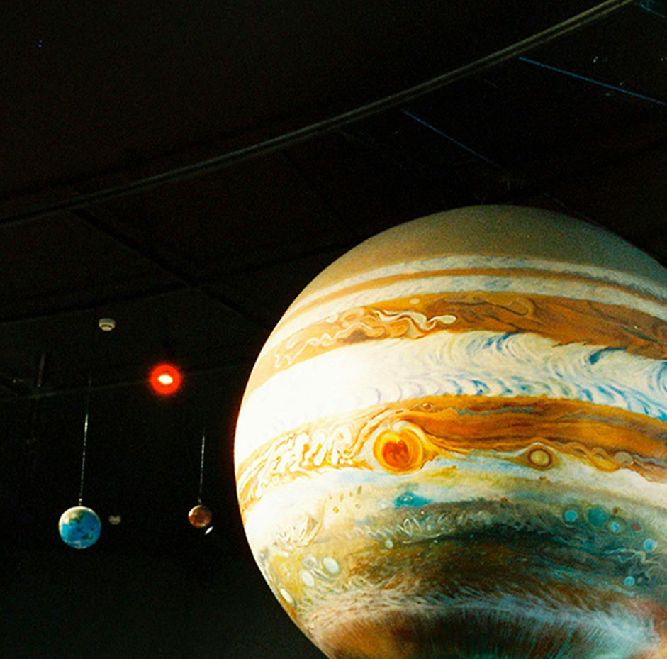
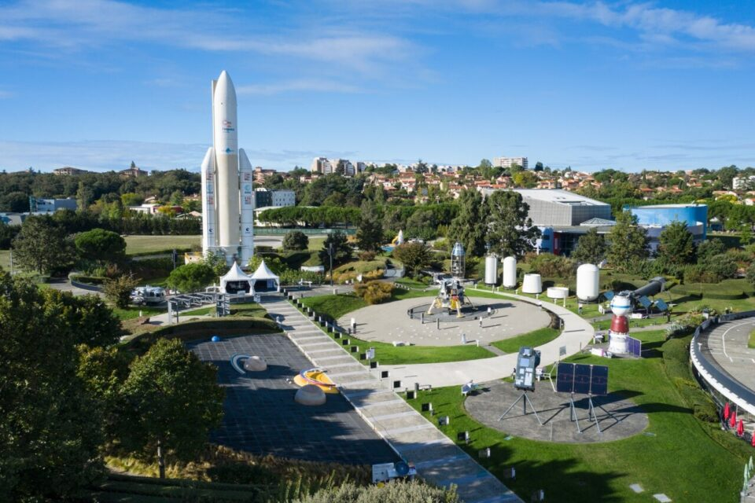
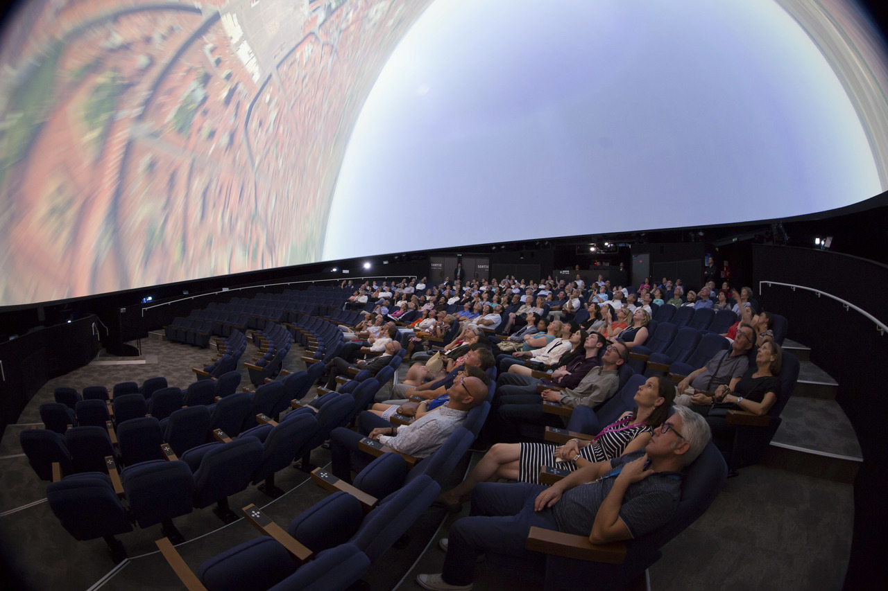

Experiencias bajo las estrellas
Exploraciones espaciales
Descripción
Un viaje educativo y tecnológico dedicado a la exploración espacial en uno de los centros
científicos más importantes de Europa. Tres días y dos noches.
El viaje se realizará a la ciudad de Toulouse, en Francia.
En esta experiencia, el destino estará centrado en el descubrimiento de la historia de la
exploración espacial.
La visita principal será a la Cité de l’Espace, un reconocido parque y museo científico dedicado al universo y la tecnología espacial. El recinto cuenta con exposiciones interactivas sobre astronautas, estaciones espaciales y misiones reales, además de réplicas de cohetes, satélites y cápsulas utilizadas en programas espaciales internacionales.
Durante la experiencia se podrán observar trajes originales de astronautas, módulos espaciales, simuladores de gravedad y exposiciones sobre la vida en el espacio. También se aprenderá sobre el entrenamiento de los astronautas, la historia de la carrera espacial, zonas de observación, cine IMAX y actividades relacionadas con astronomía y tecnología aeroespacial. Uno de los lugares más completos de Europa para aprender sobre el espacio de forma práctica y visual.
Estadía en : hotel céntrico en Toulouse, situado cerca de las principales zonas científicas y culturales de la ciudad.
Precio del viaje : 890 € por persona. Incluye vuelos de ida y vuelta a Francia, alojamiento durante tres días y dos noches, desayuno, entrada a la Cité de l’Espace, actividades guiadas y acceso a simuladores y exposiciones espaciales.
Descubre más sobre los pioneros en el espacio
Itinerario
>Día 1 - Llegada a Toulouse y descubrimiento de la ciudad
Instalación y recorrido inicial · 14:00 - 20:30
La experiencia comienza con el vuelo hacia Toulouse, una de las ciudades más importantes de Europa en investigación aeroespacial y tecnológica. Tras la llegada, se realizará el traslado al hotel céntrico, situado cerca de las principales zonas científicas y culturales de la ciudad.
Después del check-in, los viajeros dispondrán de tiempo libre para descansar o recorrer el centro de Toulouse, conocido por su arquitectura, ambiente universitario y relación con la industria espacial europea.

Día 2 - Exploración de la Cité de l’Espace
Museo espacial · 10:00 - 13:00
La jornada estará dedicada a la visita principal del viaje: la Cité de l’Espace, uno de los centros científicos sobre exploración espacial más completos de Europa.
Durante el recorrido se visitarán exposiciones interactivas sobre astronautas, estaciones espaciales y misiones reales, además de réplicas de cohetes, cápsulas y satélites utilizados en programas internacionales. Los viajeros podrán observar trajes originales de astronautas, módulos espaciales y simuladores de gravedad, aprendiendo sobre la vida en el espacio y el entrenamiento de las misiones espaciales.

Día 2 - Exploración de la Cité de l’Espace
Simuladores astronómicos · 15:00 - 17:00
La experiencia también incluirá acceso a actividades astronómicas, cine IMAX y zonas dedicadas a la historia de la carrera espacial y la tecnología aeroespacial.

Día 3 - Últimas actividades y regreso
Desayuno, tiempo libre y vuelo de vuelta · 08:30 - 15:00
La mañana comenzará con el desayuno en el hotel y tiempo libre para disfrutar de Toulouse, realizar compras o visitar los alrededores antes del regreso.
Posteriormente se efectuará el traslado al aeropuerto para tomar el vuelo de vuelta, finalizando una experiencia educativa y tecnológica centrada en la exploración espacial y el universo.


Nota importante: Los programas descritos son susceptibles de cambios por razones puntuales ajenas a nuestra organización, tales como condiciones meteorológicas o de seguridad.
Observaciones
- Si alguien tiene alergia o intolerancia a algún tipo de alimento deberá comunicarlo a la agencia para prever incidentes inesperados que cundan el panico.
- Si alguien tiene algún tipo de enfermedad que afecte a la respiración, resistencia o movimiento, deberá comunicarlo a la agencia para prever una mayor seguridad y adaptación.
- Si traen menores de edad o acompañan a personas con necesidades especiales, manténganse pendientes de ellos y no se separen en ningún momento. Recuerden presentárselos a los guías e informarles de todo lo necesario que deban tener en cuenta.
- Cualquier siniestro sucedido durante el viaje o emergencia médica será responsabilidad económica de la propia persona afectada. Los costes correrán por cuenta del viajero. Se le acompañará o transportará a la zona de asistencia médica más cercana y, si es posible, el grupo continuará su recorrido.Si el viajero se recupera a tiempo para el regreso, será reincorporado al viaje. En caso de que no sea posible, deberá ponerse en contacto con sus familiares, amigos u otras personas de confianza para poder regresar a su hogar cuando esté recuperado.
Gastos de anulación según fecha de salida
| HASTA | IMPORTE |
|---|---|
| Más de dos meses de anticipación | 0% |
| Un mes de anticipación | 40% |
| Una semana de anticipación | 80% |
| El dia del viaje | 100% |
Conforme más se acerque a la fecha de salida el importe que se le quitara a su viaje sera mayor.
El precio incluye
- Alojamiento completo
- Guía especializado
- Billete de avión
- Excursiones nocturnas
El precio no incluye
- Transporte interno
- Comidas y cenas
- Seguro opcional
- Gastos personales
Preguntas frecuentes
Aprende mas sobre tu viaje, no te pierdas nada.
Es uno de los centros científicos y espaciales más importantes de Europa, dedicado a la exploración espacial, la astronomía y la tecnología aeroespacial. Cuenta con exposiciones interactivas, simuladores y réplicas reales de naves y cohetes.
El viaje incluye vuelos de ida y vuelta a Francia, alojamiento durante tres días y dos noches, desayuno, entrada a la Cité de l’Espace y acceso a actividades guiadas, simuladores y exposiciones.
Sí. Muchas actividades de la Cité de l’Espace son visuales e interactivas, por lo que el viaje es ideal tanto para adultos como para niños interesados en el espacio y la tecnología.
La estancia se realiza en un hotel céntrico de Toulouse, situado cerca de las principales zonas culturales y científicas de la ciudad, con fácil acceso al transporte y a los puntos de interés.
Sí. El itinerario incluye tiempo libre para pasear por la ciudad, disfrutar de la gastronomía local o visitar otros lugares de interés antes del regreso.